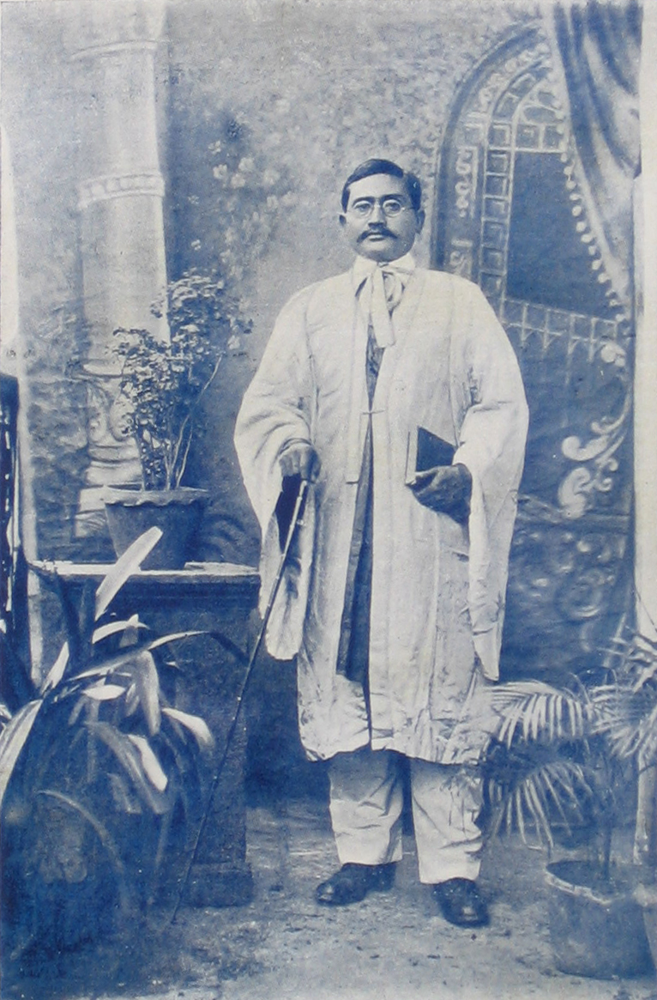

Shukra Raj Shastri Joshi (1894-24 January 1941) was a Nepalese social activist from Newar community, an intellectual and fighter for democracy who was executed by the autocratic Rana dynasty. He is one of the four martyrs of the Nepalese revolution that toppled the Rana regime.Shastri was also a social reformer and author who wrote a number of books in Nepali and Nepal Bhasa.
Shastri was born in Varanasi, India where his father Madhav Raj and mother Ratna Maya Joshi were living in forced exile due to political reasons. Madhav Raj was a leader of the Arya Samaj in Nepal. The Joshis were originally from Lalitpur.
Shukra Raj was schooled in India, and acquired the title Shastri after earning a Shastri degree from Dehradun. He became better known by this title than his actual surname Joshi.
Returning to Nepal, Shastri joined the democracy struggle. During a demonstration organized at Indra Chok, Kathmandu by the Citizens' Rights Committee, he spoke out strongly against the Rana regime and demanded the people's rights. For this act, he was arrested and sentenced to six years' imprisonment. He was subsequently sentenced to death, and on 24 January 1941, he was hanged from a tree on the side of the road at Pachali, Teku, Kathmandu.
It is believed that Shastri was executed more for his work in social reform and efforts to develop his mother tongue Nepal Bhasa than his involvement in politics. Shastri did not belong to any political party unlike the other three martyrs who were members of Nepal Praja Parishad.
